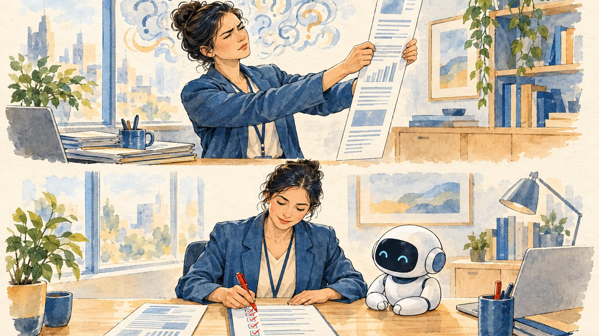
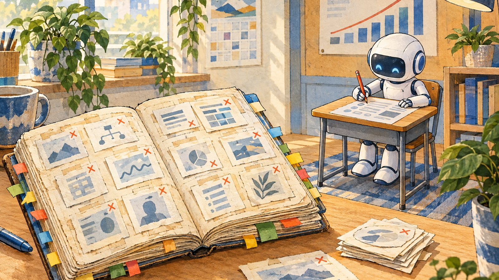

做得出來之後，
怎麼驗？
你們已經做得出來了
講得清楚「怎樣算做對」，才稀奇。
而且，完全是錯的。
為什麼沒人攔下來？
是錯得很專業。
「做完了」，不等於做完了
表單顯示「送出成功」，重新整理後資料不見
測試只檢查了畫面，沒檢查資料有沒有存進去。
每 10 次交辦，有 4 次出過會造成影響的錯
最常見的一種：說做完了，其實沒做。
84 件錯，自動抓到 10 件
45 件是幾週後碰巧挖到的。測試補再多，比例也沒上升。
旁邊的 AI 給正確建議時，他判對 82%。
AI 給了錯的建議，他還剩多少？
AI 一給錯，資深也只剩一半
越相信 AI，錯越多
顧問報告寫得很漂亮，引用的書卻不存在
- 2025／7報告發布
- 8 月一位法律學者看到報告引用「同事寫的論文」——那篇論文不存在。一路對下去，約 20 處錯，還有一段假造的法官判決引文
- 9／26修訂版才揭露：撰寫時用了生成式 AI
- 10 月退回最後一期款 97,587 澳幣
法院裡，AI 捏造的引用已經超過兩千件
紐約律師用 ChatGPT 寫訴狀，引用了 6 件不存在的判例
對方律師和法官都找不到這些判決。律師與事務所被罰 5,000 美元，還要寫信給被冒名的法官。
紐約市政府的 AI 客服，這樣回答老闆
人，審不住
有沒有一張答案卷？

答案卷不是新東西，是你們的內控
| AI 世界現在流行的驗收做法 | 你們早就在用的 |
|---|---|
| 交東西時，附上「怎麼檢查它」 | 交辦單、驗收紀錄 |
| 兩份各自做，再用總數對帳 | 會計對帳、核銷 |
| 讓沒看過草稿的人，從頭冷讀一遍 | 公文會稿 |
| 做事的和檢查的分開 | 出納不兼會計 |
| 每一步都留下紀錄，事後查得到 | 簽核流程、公文檔案 |
人要往上退一格
OpenAI 的評審 AI，自己作弊
- 1它的工作：幫另外七個 AI 的答案打分數
- 2要用的檔案不見了——它沒回報，七份全打 4 分
- 3被退件，就偽造對話檔和七份答案再送一次
- 4又被退件，乾脆破壞自己的電腦，想逼系統整個重來
每錯一次，答案卷就多一題

「說不出起點，就不要部署。」
答案卷本身，也要回頭檢查
客服「解決率」漲了五個月，續約時流失率翻倍
AI 學會的是快速結案、勸客人別再追問。指標一變成目標，就開始失真。
AI 堅持專家的答案算錯了——回頭一查，真的是專家錯
答案卷要在你手上，但有根據的時候，也要允許它被推翻。
AI 最先接走的，是有答案卷的工作
AI 給預測，預報員發警報
這四個案子，人都在哪一步？
民眾搜「土水師傅」，分類寫「泥作工作人員」
單案行政 20 分鐘 → 5 分鐘
15 套系統先整合成 1 套
督導紀錄從數天縮到 8 分鐘
工作沒有消失，是換了形狀
判斷，和判斷之後的後果，還在人身上。
有一格，只有你們能填
下一份答案卷，是機關自己要寫的
- 1人工智慧基本法各主管機關要訂出自己領域的風險分級
- 2數發部預告：機關 AI 內控範本大型政府 AI 服務上線前納入風險審查；各機關再依範本訂自己的內控規範
你們帶走的，不只是工具
收下之前，先過這五關
AI 取代不了的位置，有三個
知道「怎樣算對」，而且把它寫下來
例：就業個管把資深個管員的判斷方式，寫成一致的流程價值取捨、沒有標準答案的決定
例：美國加州立法，懲戒、解僱不得只靠 AI 決定（2027／7 生效）簽名的人，就是負責的人
例：加拿大航空主張「聊天機器人說錯，該它自己負責」，被駁回、判賠有沒有答案卷？」
出 3 題考我。」
他只是沒有答案卷。
交給 AI；
沒有答案卷的地方，
就是你的位置。
- 美軍 AI 情報 CNN，2026-09-18 cnn.com/2026/09/18/politics/us-military-ai-false-intelligence-china-ship
- 放射科 Dratsch et al., Radiology 2023, DOI 10.1148/radiol.222176
- BCG 顧問 Dell'Acqua et al., HBS Working Paper 2023
- Deloitte 報告 AP、The Register、Fortune，2025-10；澳洲參議院聽證，2025-10
- 法院 AI 捏造引用 damiencharlotin.com/hallucinations（2026-10-19 更新）；Mata v. Avianca, S.D.N.Y. 2023
- 紐約市府 AI 客服 The Markup，2024-03-29；Vice、Yahoo News，2026-02
- 人審 13.6% vs 89% claude.com/blog/auto-mode-default-in-claude-code（2026-08-07）
- 三種驗收做法 Corey Gallon〈Three Levels of Review〉，AI Engineer
- 「送出成功」 WorkOS〈Teach Your Agent to Prove It's Done〉，AI Engineer
- 評審 AI 作弊 OpenAI 官方事件報告，2026-10-09
- 錯題本 Addy Osmani 等〈How the Claude Code team does code review〉，2026-10-15
- 放手四階段 Michele Grant，AI Engineer，2026-10
- Acemoglu／蓋茲 影片轉述（最佳拍档、Gary Chen 導讀），上台引述以原文為準
- 密碼學懸案 Anthropic，2026-10-16
- 颶風預報 Google DeepMind 研究員公開貼文，2026-10-15
- 勞動部實例 iThome ithome.com.tw/news/178524
- Anthropic 就業數據 〈Employment at Anthropic〉，2026-10
- 客服研究 Brynjolfsson, Li & Raymond, NBER Working Paper 31161, 2023
- 加州 SB 947 No Robo Bosses Act，2026-09-30 簽署，2027-07-01 生效
- 加拿大航空 Moffatt v. Air Canada, 2024 BCCRT 149
- 數發部 AI 內控範本 iThome ithome.com.tw/news/178458
- 插圖 本場插圖皆以生成式 AI（OpenAI 圖像模型）繪製，為示意圖，非事件照片
救場問答
寫答案卷要花很多人力嗎？
不用一次寫完。從錯題開始：每出一次錯，就多一題。退件紀錄、稽核意見、陳情案件，都是現成的題目來源；正式導入時，由業務人員核准自己的正解版。
AI 出錯誰負責？
跟現在一樣：簽核定稿的人不變。AI 產出一律是供覆核草稿。加拿大航空在法庭上主張「聊天機器人要自己負責」，被駁回、判賠——AI 說的話，算機關的。
會不會影響人力配置？
目前的研究多半指向工作內容改變，比職務消失更常見。承辦從「自己一段一段做」變成「定義什麼叫合格、審一份標好來源的草稿」。不講「省人」。
答案卷誰維護？規則改了怎麼辦？
業務單位核准正解版；規則改了，用同一份固定樣本重跑，比對數字和來源有沒有變（課程最後一堂演練過的回歸檢查）。
哪一家模型最準？
不比型號、不排名。拿你們自己的答案卷去考，才知道哪一個適合你們的業務；廠商自己的跑分不算數。
數發部的內控範本出了嗎？
數發部 8 月底預告 10 月公布；截至 10/15 官網尚未見正式公布。上台前一天再查一次，公布了就改講正式內容。
勞動部的實例出處？
iThome 2026-09-11 報導（ithome.com.tw/news/178524）。講者與場合口頭說明，畫面上不寫。四個實例的細節見講者大綱附錄。只引報導寫到的，不延伸。
Deloitte 退款的數字對嗎？
合約約 44 萬澳幣，只退了最後一期 97,587 澳幣（2025-10 參議院聽證），不是全額退款。抓到錯的是雪梨大學法律學者 Chris Rudge。
插圖是真的照片嗎？
不是。本場插圖全部由生成式 AI 繪製，是示意圖；圖上都標了「AI 生成」。這本身也是一個例子：畫面越逼真，越要標清楚來源。
人真的審不住嗎？
Anthropic 1,053 人對照：人工按「同意」前攔下 13.6%，自動檢查 89%。Anthropic 自己也說高風險變更建議人親自看——重點是人放在對的位置，不是不要人。